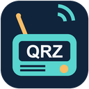

QRZ Callsign Extension
Settings
A greeting for their Web Log
Save a short message to include when you choose Sign Their Web Log.
Your comment is saved only in this Chrome profile and sent to QRZ when you choose Sign Their Web Log. Saving it here does not sign a station’s log.